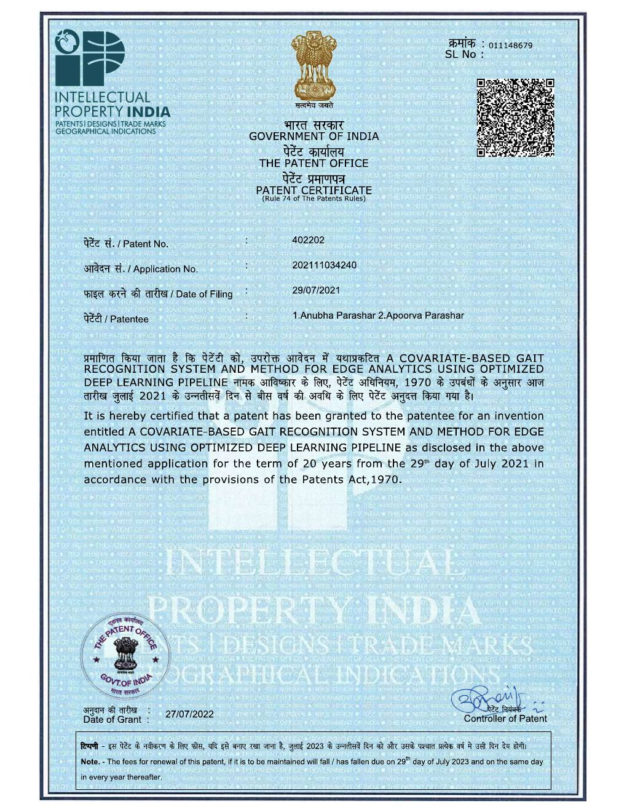
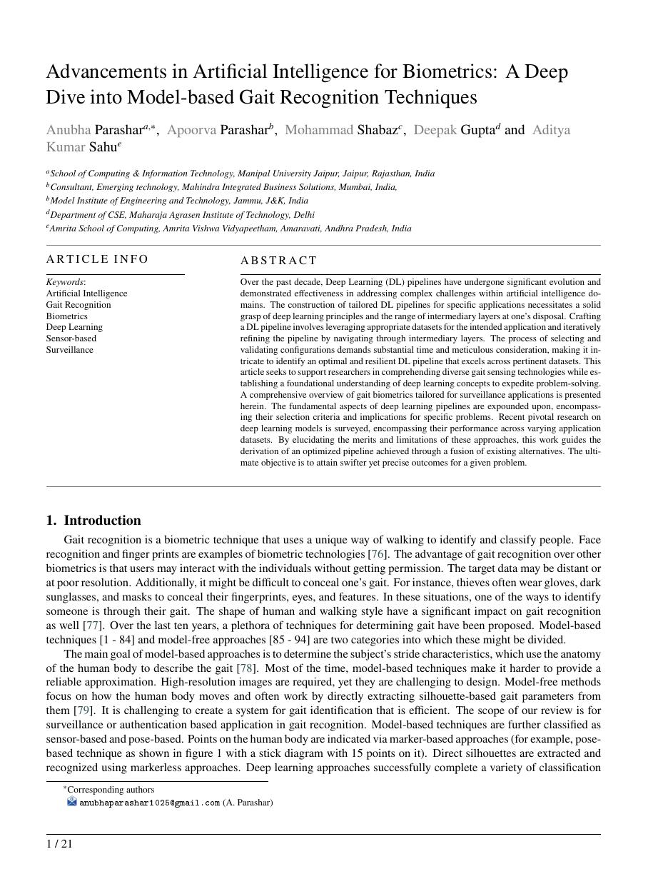
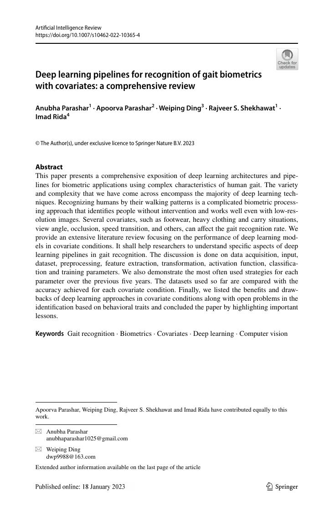
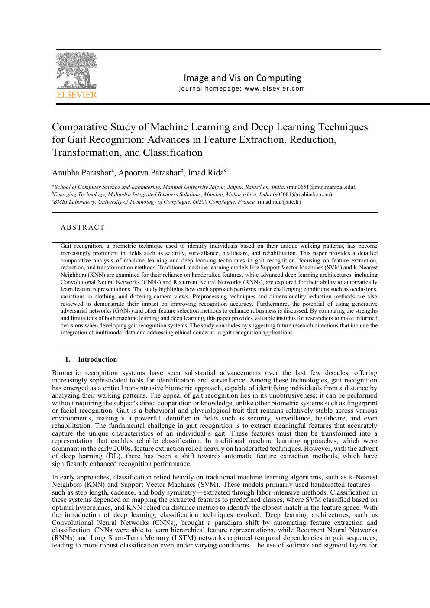
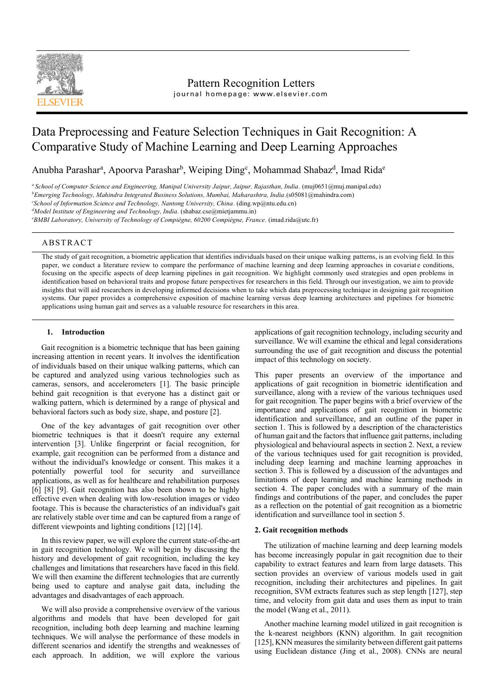
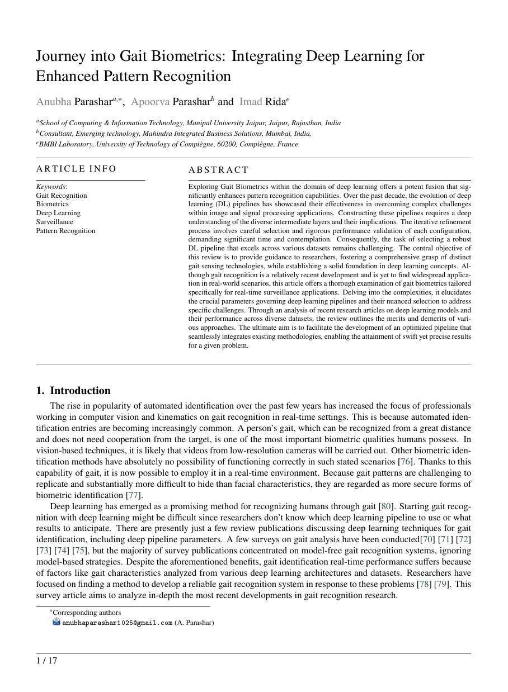
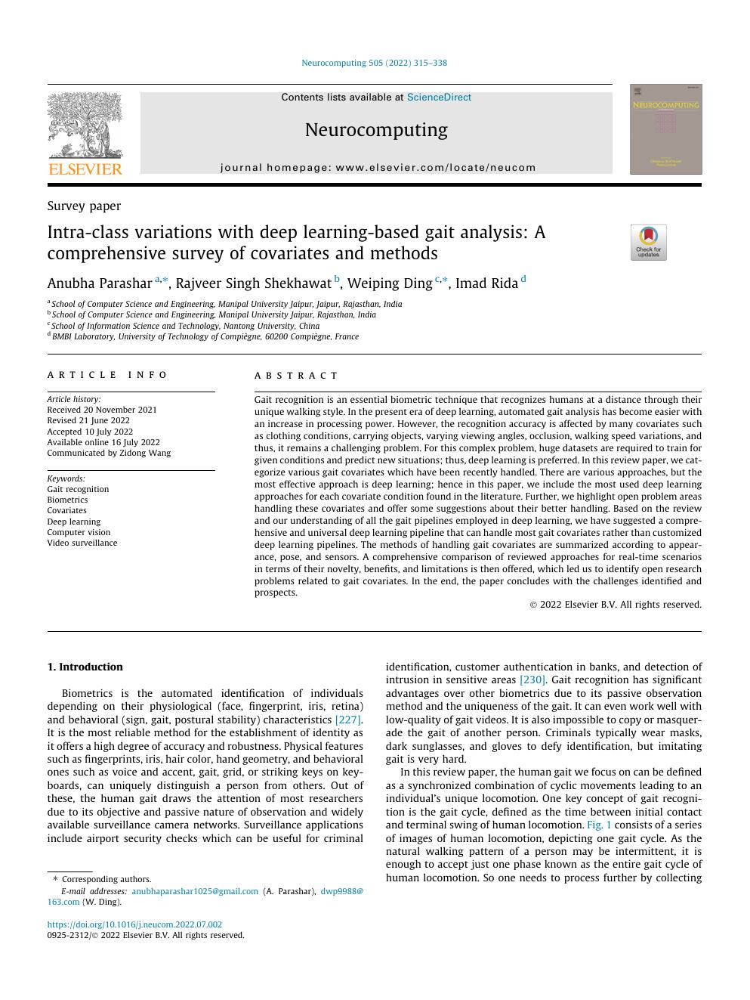
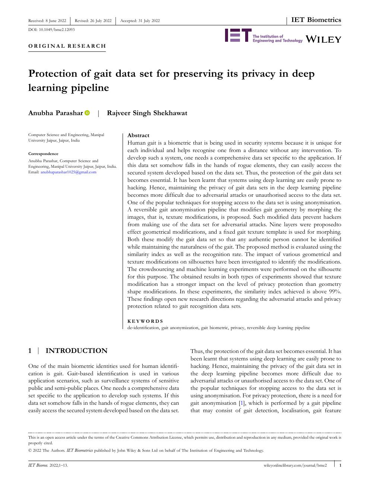
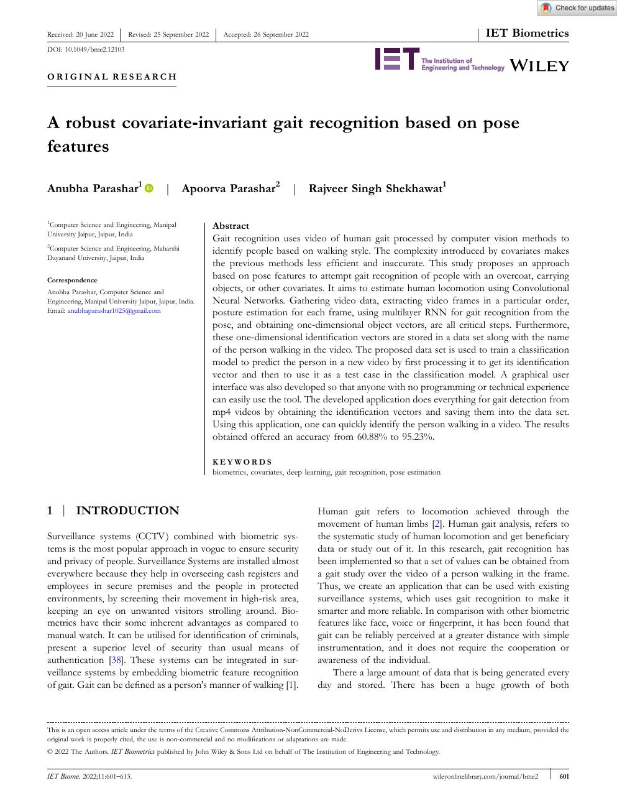

Research and IP
Peer-reviewed evidence behind GaitAI.
Published work, patent protection, conference evidence, and technical depth across gait recognition, covariates, surveillance readiness, privacy, pose features, and deep learning pipelines.
Intellectual property
Granted patent connected to gait recognition and edge analytics.

A Covariate-based Gait Recognition System and Method for Edge Analytics Using Optimized Deep Learning Pipeline
Indian Patent Granted, 2021
Strengthens the company moat around covariate-aware gait recognition, optimized deep learning pipelines, and edge analytics.
Publications
Featured gait intelligence papers.
Selected publications supporting the technology and commercial story.
8papers

Advancements in artificial intelligence for biometrics: A deep dive into model-based gait recognition techniques
Engineering Applications of Artificial Intelligence, 2024
A review of model-based gait recognition techniques connecting AI biometrics, pose representation, and real-world recognition constraints.

Deep Learning Pipelines for Recognition of Gait Biometrics with Covariates - A Comprehensive Review
Artificial Intelligence Review, 2022
A complete view of deep learning gait pipelines, from acquisition and preprocessing to covariate handling and recognition.

Real-time Gait Biometrics for Surveillance Applications: A Review
Image and Vision Computing, 2023
A deployment-oriented review focused on surveillance constraints such as camera viewpoint, occlusion, speed, and distance.

Preprocessing and feature selection in gait recognition
Pattern Recognition Letters, 2023
Supports feature engineering and signal-quality foundations for robust gait intelligence.

A journey into gait biometrics with deep learning
Digital Signal Processing, 2024
Connects signal processing, model design, and practical recognition for full-stack gait biometrics.

Intra-class Variations with Deep Learning-based Gait Analysis: A Comprehensive Survey of Covariates and Methods
Neurocomputing, 2022
Covers real-world variables such as view angle, clothing, carrying conditions, walking speed, and surface.

Protection of gait data set for preserving its privacy in deep learning pipeline
IET Biometrics, 2022
A privacy-preserving direction for biometric gait data handling.

A Robust Covariate-invariant Gait Recognition based on Pose Features
IET Biometrics, 2022
A pose-feature approach to covariate-invariant gait recognition.
Conference evidence
Gait-focused conference work across surveillance, pose, Parkinson's movement analysis, and locomotion classification.
2023Clothing attribute gait recognition
Deep Learning-based Framework for Accurate Clothing Attribute Recognition and Style Navigation for Gait Recognition
International Conference on Bio-engineering for Smart Technologies, 2023
Conference work linking clothing attributes and gait recognition, useful for real-world covariates where appearance changes affect movement-based identity systems.
2021Pose-based surveillance gait analysis
Optimized Pose-Based Gait Analysis for Surveillance
2nd International Conference on Innovations in Computational Intelligence and Computer Vision, Manipal University Jaipur, Aug 5-6, 2021
Pose-based gait analysis for surveillance, aligned with camera deployments where body landmarks and motion signatures are stronger signals than facial visibility.
2020Multi-view gait signatures
Surveillance System To Provide Secured Gait Signatures In Multi View Variations Using Deep Learning
International Conference on Modelling, Simulation & Intelligent Computing, BITS Dubai, Jan 29-31, 2020
Multi-view gait signatures using deep learning, directly relevant to surveillance environments with changing camera angles and walking directions.
2018Parkinson gait features
Tracing Gesture and Extracting Gait Features to Recognize Parkinson's Disease Using Multi-layered Back Propagation Algorithm
International Conference on Innovative Technologies, Zagreb, Croatia, Sep 5-7, 2018
Best-paper conference work connecting gait features and neurological movement analysis, relevant to clinical mobility screening and medical motion analytics.
2018Human locomotion categories
Identification of gait data using machine learning technique to categories human locomotion
10th International Conference on Security of Information and Networks, Jaipur, India, Oct 13-15, 2018
Machine-learning work on identifying gait data and categorizing locomotion, supporting movement classification beyond identity recognition.
2016Gait data clustering
Clustering Gait Data using different machine learning techniques and finding the best technique
International Conference on Smart Trends for Information Technology and Computer Communications, Jaipur, India, Aug 6-7, 2016
Early gait-data clustering work comparing machine-learning approaches for grouping movement patterns and extracting useful locomotion structure.
2016Gait data classification
Classifying Gait Data using different machine learning techniques and finding the optimum technique of classification
International Conference on ICT for Sustainable Development, Panaji, Goa, India, Jul 1-2, 2016
Foundational gait classification work comparing machine-learning techniques for selecting reliable movement-recognition methods.